Legado construido a mais de 25 anos
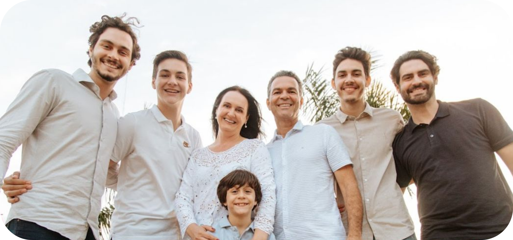
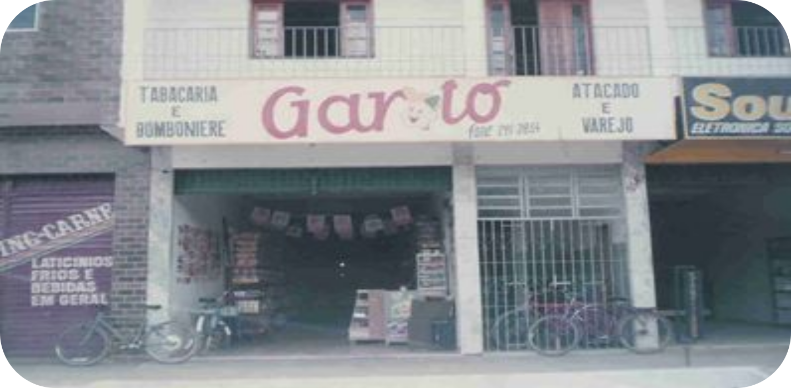
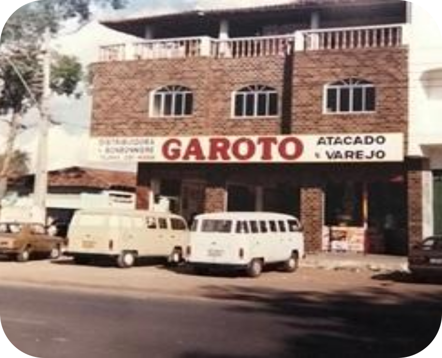
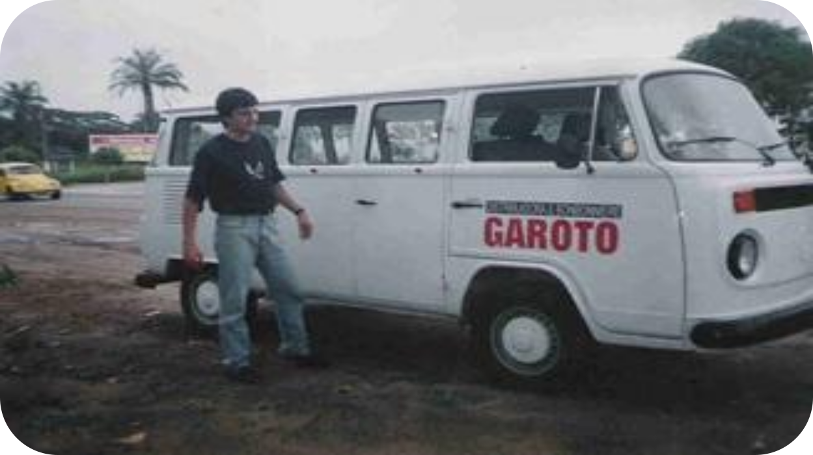
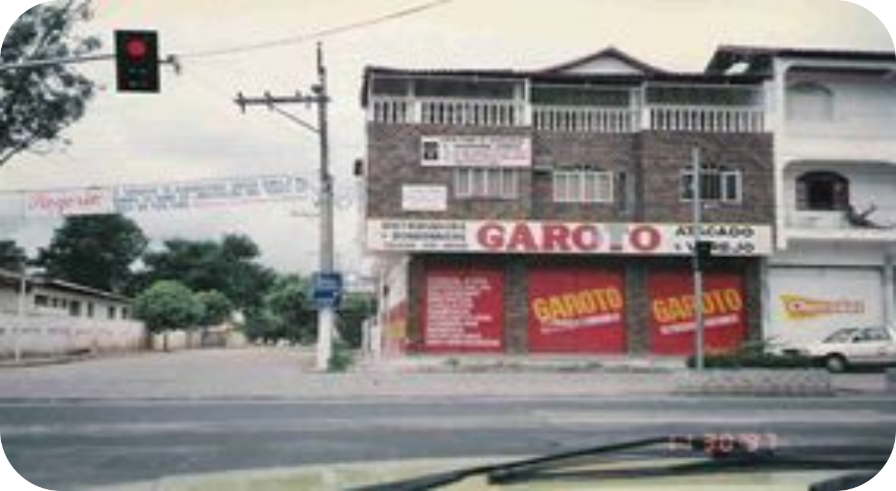
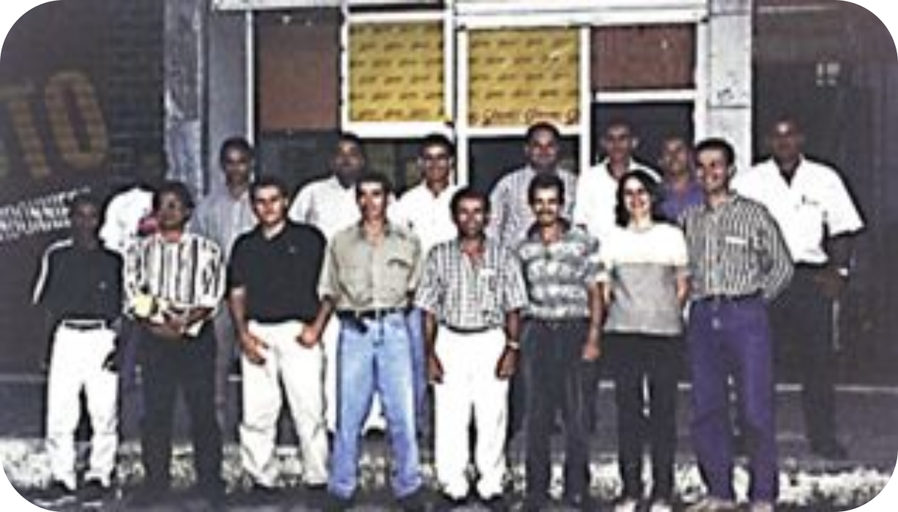
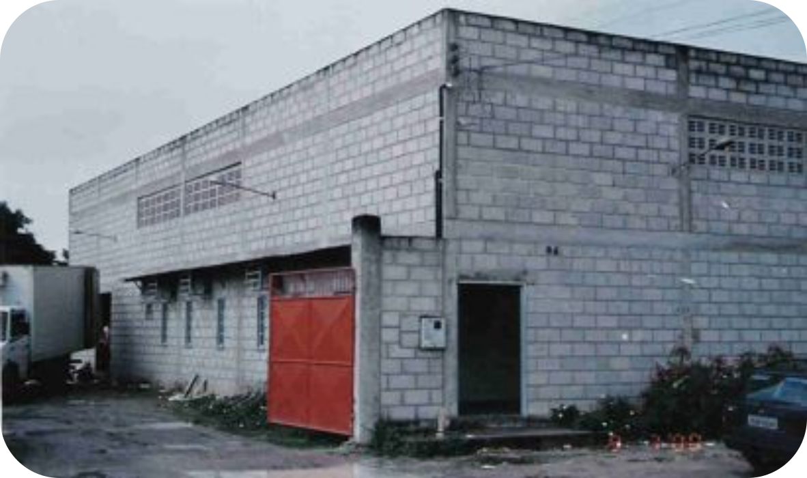
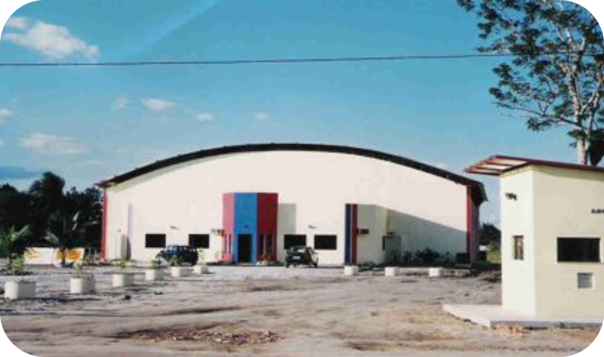
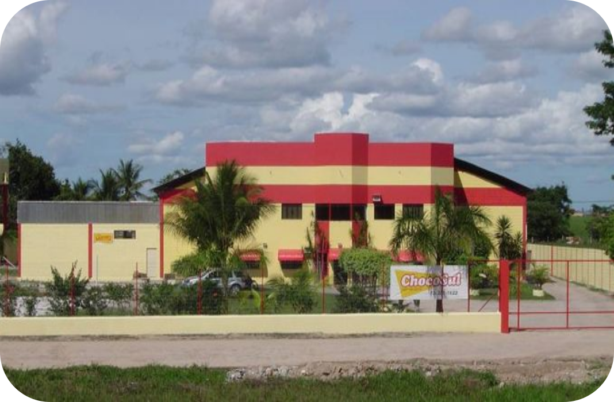
Uma história construída com fé, coragem e propósito
Tudo começou em 1993, em Teixeira de Freitas, quando Ofélia e Geraldo fundaram a Distribuidora Lázaro com pouco mais do que determinação e vontade de crescer. Em 1996, enxergando uma oportunidade onde outros viam apenas uma antiga sede, nasceu a Chocosul Distribuidora — e com ela, uma nova fase de expansão.A chegada a Eunápolis em 1997 marcou o início de uma história que seria contada por décadas. Com o filho Rogério já na operação, a família foi construindo, tijolo por tijolo, uma estrutura cada vez mais sólida: sede própria em 2001, primeira ampliação em 2005 e, em 2006, o surgimento da Mastter Distribuidora, ampliando o alcance e a força do grupo.Em 2014, uma nova geração assumiu o leme: Ofélia na diretoria comercial da Mastter e Rogério na da Chocosul, unindo a experiência de quem construiu com a energia de quem vai multiplicar.Hoje, com mais de 28 anos de história, o Grupo Astoria reúne seis empresas — Chocosul, Mastter, Lazarolog, Apolo, Astória Agro e Campo Santo — com operações em Eunápolis e uma filial em Itabuna, continuando a escrever uma trajetória de crescimento, impacto e orgulho regional.
1993
A história começa com o início da distribuidora LÁZARO em Teixeira de freitas, fundada por Ofélia e Geraldo.
1996
Fé, sonhos, superação e coragem.
1996
2ª kombi, sorteada na 1ª parcela do consórcio "Sorte é quando a oportunidade encontra com o preparo"
1997
Início da Chocosul Distribuidora: visão de oportunidade na antiga sede onde começou o atacadista.
1997
Equipe ampliada, incluindo Rogério na operação.
1999
1ª sede em Eunápolis na Urbis 1
2001
Sede própria da Chocosul
2005
1ª sede em Eunápolis na Urbis 1
2006
Etapa de crescimento com o nascimento da Mastter Distribuidora
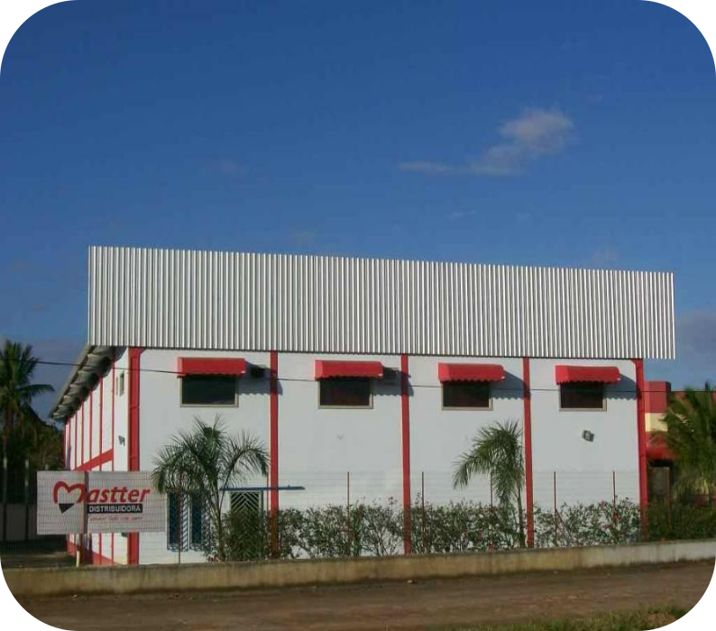
2023
Expanção com a filial em Itabuna
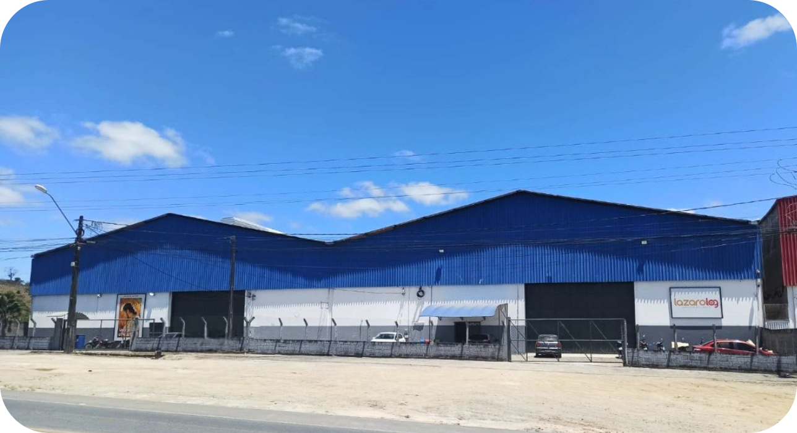